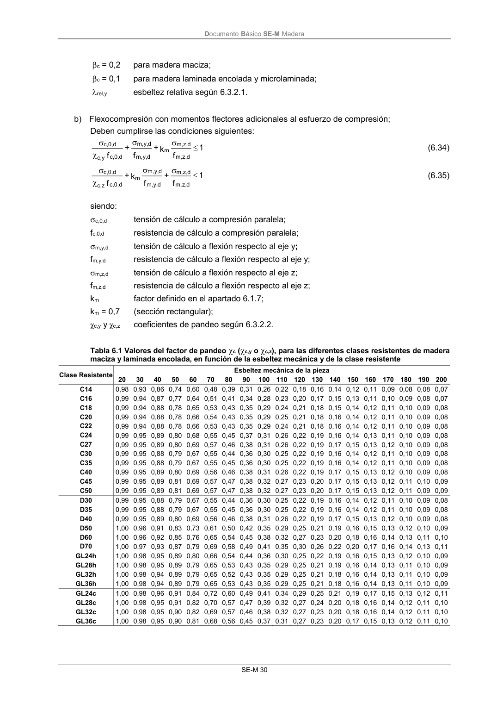

DB-SE-M Madera · edición 2019-12-20 · capa oficial
Documento DB-SE-M-oficial · SHA-256 del PDF 26b5819839ebfda78b0b119c5e76a0a37773b0d763c05688541870075df93718
Página física 36 de 132.
Copia fiel del PDF fuente · Fuente oficial
Ficha de la disposición en la fuente oficial
Formato: Texto de la página (Markdown)
Documento Básico SE-M Madera SE-M 30 c = 0,2 para madera maciza; c = 0,1 para madera laminada encolada y microlaminada; rel,y esbeltez relativa según 6.3.2.1. b) Flexocompresión con momentos flectores adicionales al esfuerzo de compresión; Deben cumplirse las condiciones siguientes: 1 f k + f + f d z, m, d z, m, m d y, m, d y, m, d c,0, y c, d c,0, (6.34) 1 f + f k + f d z, m, d z, m, d y, m, d y, m, m d c,0, z c, d c,0, (6.35) siendo: c,0,d tensión de cálculo a compresión paralela; fc,0,d resistencia de cálculo a compresión paralela; m,y,d tensión de cálculo a flexión respecto al eje y; fm,y,d resistencia de cálculo a flexión respecto al eje y; m,z,d tensión de cálculo a flexión respecto al eje z; fm,z,d resistencia de cálculo a flexión respecto al eje z; km factor definido en el apartado 6.1.7; km = 0,7 (sección rectangular); χc,y y χc,z coeficientes de pandeo según 6.3.2.2. Tabla 6.1 Valores del factor de pandeo c (c,y o c,z), para las diferentes clases resistentes de madera maciza y laminada encolada, en función de la esbeltez mecánica y de la clase resistente Clase Resistente Esbeltez mecánica de la pieza 20 30 40 50 60 70 80 90 100 110 120 130 140 150 160 170 180 190 200 C14 0,98 0,93 0,86 0,74 0,60 0,48 0,39 0,31 0,26 0,22 0,18 0,16 0,14 0,12 0,11 0,09 0,08 0,08 0,07 C16 0,99 0,94 0,87 0,77 0,64 0,51 0,41 0,34 0,28 0,23 0,20 0,17 0,15 0,13 0,11 0,10 0,09 0,08 0,07 C18 0,99 0,94 0,88 0,78 0,65 0,53 0,43 0,35 0,29 0,24 0,21 0,18 0,15 0,14 0,12 0,11 0,10 0,09 0,08 C20 0,99 0,94 0,88 0,78 0,66 0,54 0,43 0,35 0,29 0,25 0,21 0,18 0,16 0,14 0,12 0,11 0,10 0,09 0,08 C22 0,99 0,94 0,88 0,78 0,66 0,53 0,43 0,35 0,29 0,24 0,21 0,18 0,16 0,14 0,12 0,11 0,10 0,09 0,08 C24 0,99 0,95 0,89 0,80 0,68 0,55 0,45 0,37 0,31 0,26 0,22 0,19 0,16 0,14 0,13 0,11 0,10 0,09 0,08 C27 0,99 0,95 0,89 0,80 0,69 0,57 0,46 0,38 0,31 0,26 0,22 0,19 0,17 0,15 0,13 0,12 0,10 0,09 0,08 C30 0,99 0,95 0,88 0,79 0,67 0,55 0,44 0,36 0,30 0,25 0,22 0,19 0,16 0,14 0,12 0,11 0,10 0,09 0,08 C35 0,99 0,95 0,88 0,79 0,67 0,55 0,45 0,36 0,30 0,25 0,22 0,19 0,16 0,14 0,12 0,11 0,10 0,09 0,08 C40 0,99 0,95 0,89 0,80 0,69 0,56 0,46 0,38 0,31 0,26 0,22 0,19 0,17 0,15 0,13 0,12 0,10 0,09 0,08 C45 0,99 0,95 0,89 0,81 0,69 0,57 0,47 0,38 0,32 0,27 0,23 0,20 0,17 0,15 0,13 0,12 0,11 0,10 0,09 C50 0,99 0,95 0,89 0,81 0,69 0,57 0,47 0,38 0,32 0,27 0,23 0,20 0,17 0,15 0,13 0,12 0,11 0,09 0,09 D30 0,99 0,95 0,88 0,79 0,67 0,55 0,44 0,36 0,30 0,25 0,22 0,19 0,16 0,14 0,12 0,11 0,10 0,09 0,08 D35 0,99 0,95 0,88 0,79 0,67 0,55 0,45 0,36 0,30 0,25 0,22 0,19 0,16 0,14 0,12 0,11 0,10 0,09 0,08 D40 0,99 0,95 0,89 0,80 0,69 0,56 0,46 0,38 0,31 0,26 0,22 0,19 0,17 0,15 0,13 0,12 0,10 0,09 0,08 D50 1,00 0,96 0,91 0,83 0,73 0,61 0,50 0,42 0,35 0,29 0,25 0,21 0,19 0,16 0,15 0,13 0,12 0,10 0,09 D60 1,00 0,96 0,92 0,85 0,76 0,65 0,54 0,45 0,38 0,32 0,27 0,23 0,20 0,18 0,16 0,14 0,13 0,11 0,10 D70 1,00 0,97 0,93 0,87 0,79 0,69 0,58 0,49 0,41 0,35 0,30 0,26 0,22 0,20 0,17 0,16 0,14 0,13 0,11 GL24h 1,00 0,98 0,95 0,89 0,80 0,66 0,54 0,44 0,36 0,30 0,25 0,22 0,19 0,16 0,15 0,13 0,12 0,10 0,09 GL28h 1,00 0,98 0,95 0,89 0,79 0,65 0,53 0,43 0,35 0,29 0,25 0,21 0,19 0,16 0,14 0,13 0,11 0,10 0,09 GL32h 1,00 0,98 0,94 0,89 0,79 0,65 0,52 0,43 0,35 0,29 0,25 0,21 0,18 0,16 0,14 0,13 0,11 0,10 0,09 GL36h 1,00 0,98 0,94 0,89 0,79 0,65 0,53 0,43 0,35 0,29 0,25 0,21 0,18 0,16 0,14 0,13 0,11 0,10 0,09 GL24c 1,00 0,98 0,96 0,91 0,84 0,72 0,60 0,49 0,41 0,34 0,29 0,25 0,21 0,19 0,17 0,15 0,13 0,12 0,11 GL28c 1,00 0,98 0,95 0,91 0,82 0,70 0,57 0,47 0,39 0,32 0,27 0,24 0,20 0,18 0,16 0,14 0,12 0,11 0,10 GL32c 1,00 0,98 0,95 0,90 0,82 0,69 0,57 0,46 0,38 0,32 0,27 0,23 0,20 0,18 0,16 0,14 0,12 0,11 0,10 GL36c 1,00 0,98 0,95 0,90 0,81 0,68 0,56 0,45 0,37 0,31 0,27 0,23 0,20 0,17 0,15 0,13 0,12 0,11 0,10

Datos candidatos: compruebe celdas y notas en el PDF.